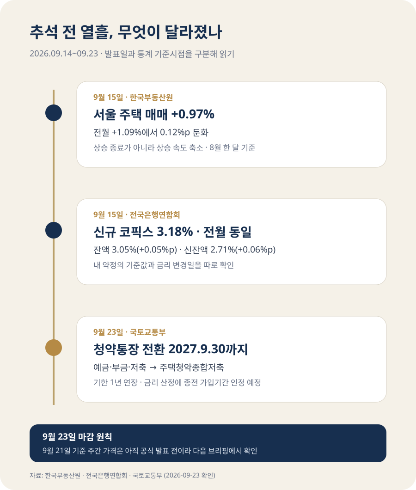

집값은 올랐지만 속도는 낮아졌고
대출 기준값은 엇갈렸습니다
서울 집값은 여전히 올랐지만 상승 속도는 낮아졌고, 변동형 주담대의 기준이 되는 코픽스는 어떤 지표를 쓰느냐에 따라 결과가 달랐습니다. 오래된 청약예금·부금·저축을 종합저축으로 바꿀 수 있는 기한은 2027년 9월 30일까지 연장됐습니다. 지금은 ‘집값이 오른다’는 한 문장보다 내 지역, 내 대출 약정, 내 청약통장의 종류를 따로 확인해야 할 때입니다.
서울은 올랐지만 5개월 만에 상승폭이 줄었습니다
한국부동산원이 9월 15일 발표한 8월 전국주택가격동향에서 전국 주택종합 매매가격은 전월보다 0.32% 올랐습니다. 수도권은 +0.63%, 서울은 +0.97%, 비수도권은 +0.03%였습니다. 서울은 7월 +1.09%에서 8월 +0.97%로 0.12%포인트 낮아져, 4월 이후 처음으로 상승폭이 줄었습니다.
아파트만 보면 차이는 더 분명합니다. 전국 +0.39%, 수도권 +0.76%, 서울 +1.05%, 비수도권 +0.05%였습니다. 서울 아파트 상승률은 7월보다 0.22%포인트 낮아졌습니다. 이것은 가격이 내렸다는 뜻이 아니라 오르는 속도가 느려졌다는 뜻입니다.
| 8월 매매가격 | 주택종합 | 아파트 | 읽을 때 주의할 점 |
|---|---|---|---|
| 전국 | +0.32% | +0.39% | 아파트가 전체 주택보다 상승폭이 컸습니다. |
| 수도권 | +0.63% | +0.76% | 전국 평균을 웃돌았습니다. |
| 서울 | +0.97% | +1.05% | 상승은 이어졌지만 전월보다 둔화했습니다. |
| 비수도권 | +0.03% | +0.05% | 평균은 소폭 상승이나 지역별 차이가 큽니다. |
서울 안에서도 같은 방향은 아니었습니다. 주택종합 기준 강남구는 -0.18%, 서초구는 -0.01%로 하락한 반면 성북구 +1.83%, 노원구 +1.77%, 서대문구 +1.64%, 중랑구 +1.53%는 강세였습니다. ‘서울 평균 +0.97%’만 보고 내가 보는 단지의 호가를 정당화해서는 안 되는 이유입니다. 계약 전에는 같은 단지·면적의 최근 실거래와 현재 매물을 함께 봐야 합니다.
전세도 함께 올랐지만 매매와 지역 순서는 달랐습니다
8월 전국 주택종합 전세가격은 +0.35%, 아파트 전세가격은 +0.44%였습니다. 서울 아파트 전세는 +0.95%, 수도권은 +0.78%, 비수도권은 +0.14%였습니다. 매매를 미루는 수요가 임차시장에 남아 있거나 입주물량이 적은 지역에서는 전세가격이 더 민감하게 움직일 수 있습니다.
하지만 서울 전세 상승률만으로 모든 단지의 전세가 부족하다고 단정할 수는 없습니다. 같은 구에서도 입주가 시작되는 신축 주변과 학군·역세권 대단지는 매물 사정이 다릅니다. 재계약을 앞뒀다면 구 평균보다 현재 단지의 동일 면적 전세 매물 수, 최근 신규계약 보증금, 갱신계약 여부를 먼저 비교하세요. 매수를 고민한다면 매매가와 전세가가 같은 방향으로 움직였는지도 확인해야 실제 필요한 자기자본을 가늠할 수 있습니다.
코픽스가 3.18%로 멈췄는데 내 이자는 왜 다를까요?
전국은행연합회가 9월 15일 공시한 8월 기준 코픽스에서 신규취급액 기준은 3.18%로 7월과 같았습니다. 그러나 잔액 기준은 3.00%에서 3.05%로 0.05%포인트, 신잔액 기준은 2.65%에서 2.71%로 0.06%포인트 올랐습니다.
코픽스는 은행이 예금과 은행채 등으로 돈을 조달한 비용을 모아 만든 지수입니다. 신규취급액 기준은 그달 새로 조달한 자금의 변화가 빨리 반영되고, 잔액·신잔액 기준은 기존 조달자금까지 포함해 천천히 움직입니다. 그래서 같은 달에도 세 숫자가 다르게 움직일 수 있습니다.
예를 들어 내 주담대가 ‘신규취급액 코픽스 + 가산금리’이고 6개월마다 금리가 바뀌는 상품이라면, 이번 3.18%는 다음 재산정일에 적용되는 여러 요소 중 하나입니다. 반대로 신잔액 코픽스 연동 상품이라면 2.71%의 상승이 관련됩니다. 여기에 은행이 정한 가산금리와 급여이체·카드사용 같은 우대조건이 붙으므로, 서로 다른 차주의 최종 금리를 코픽스 숫자 하나로 비교할 수 없습니다.

오래된 청약통장은 서둘러 없앨 필요가 없어졌습니다
국토교통부는 9월 23일 청약예금·청약부금·청약저축을 주택청약종합저축으로 전환할 수 있는 기한을 2026년 9월 30일에서 2027년 9월 30일로 1년 연장한다고 발표했습니다. 이 제도는 2024년 10월 시작됐습니다.
종전 통장은 신청할 수 있는 주택이 제한됩니다. 청약예금과 청약부금은 민영주택, 청약저축은 국민주택 중심입니다. 종합저축으로 바꾸면 국민주택과 민영주택 모두에 청약할 수 있습니다. 다만 ‘전환하면 과거 실적이 모든 주택 유형에 소급된다’고 이해하면 안 됩니다.
| 궁금한 점 | 확인된 내용 |
|---|---|
| 기존 실적 | 종전 통장으로 청약할 수 있었던 주택 유형은 기존 가입기간과 납입실적을 인정합니다. |
| 새로 열린 유형 | 전환으로 새롭게 청약할 수 있게 된 주택 유형은 전환 이후의 가입기간과 납입실적을 인정합니다. |
| 금리 | 종전 통장 가입기간도 금리 산정에 인정하도록 개선합니다. 2년 이상 가입자는 전환 즉시 최고 연 3.1%를 적용하는 내용이며, 관련 고시는 2026년 10월 개정 예정입니다. |
| 신청 | 가입 은행 영업점이나 모바일 앱에서 신청합니다. 청약예금·부금은 주택도시기금 수탁은행 9곳 중 원하는 은행으로 옮겨 전환할 수 있습니다. |
따라서 전환 여부는 ‘이자가 높아진다’ 하나로 정할 일이 아닙니다. 앞으로 국민주택과 민영주택 중 어디에 청약할지, 현재 통장의 지역별 예치금과 가입기간이 어떤 의미인지, 전환 뒤 새로 인정되는 실적이 무엇인지 은행과 청약홈에서 확인한 뒤 결정해야 합니다. 1년이 연장됐으므로 연휴 전에 급히 처리할 이유는 줄었습니다.
추석 전에 내 상황에 맞춰 확인할 것은 세 가지입니다
서울 평균 상승률 대신 관심 단지의 같은 면적 최근 실거래, 현재 최저 호가, 전세 매물을 나란히 적어 봅니다. 상승폭 둔화는 가격 하락과 다릅니다.
약정서에서 코픽스 종류와 다음 금리 변경일을 찾습니다. 기준값이 같아도 가산·우대금리가 달라지면 실제 적용금리는 달라질 수 있습니다.
통장 종류, 가입일, 납입실적, 목표 주택 유형을 먼저 확인합니다. 전환기한은 2027년 9월 30일까지라 비교할 시간이 있습니다.
9월 23일 마감 뒤에는 무엇을 봐야 할까요?
이 글은 9월 23일까지 공개된 공식 자료만 사용했습니다. 한국부동산원의 9월 21일 기준 주간 아파트가격 동향은 이 마감 시점에 아직 공표되지 않았습니다. 직전 주 수치를 새 수치처럼 반복하거나 언론의 예상치를 공식 통계처럼 쓰지 않았습니다.
| 확인 시점 | 공식 자료 | 판정할 내용 |
|---|---|---|
| 9월 24일 이후 | 한국부동산원 주간 아파트가격 동향 | 서울 상승폭 둔화가 이어지는지, 강남권 조정과 외곽 상승의 간격이 좁아지는지 |
| 10월 15일 | 전국은행연합회 9월 기준 코픽스 | 신규취급액 기준이 다시 오르는지, 잔액·신잔액 상승세가 이어지는지 |
| 2026년 10월 | 청약저축 금리 관련 고시 | 종전 가입기간을 금리에 인정하는 개선안의 실제 시행일과 은행별 처리 기준 |
자료와 해석 기준
- 한국부동산원 부동산통계정보시스템 — 2026년 8월 전국주택가격동향, 9월 15일 발표
- 전국은행연합회 COFIX 공시 — 2026년 8월 기준 신규취급액·잔액·신잔액 코픽스, 9월 15일 공시
- 국토교통부, 청약 예·부금 등 가입자 종합저축 전환기회 1년 더 — 2026년 9월 23일
정보 기준일: 2026-09-23. 주택가격지수는 표본주택의 가격 변동을 보여 주는 지수이며 개별 주택의 실제 거래가격과 같지 않습니다. 대출금리는 금융회사·차주·담보·우대조건에 따라 달라지고, 청약통장 전환의 유불리는 통장 종류와 목표 주택에 따라 다릅니다. 계약·대출·전환 전에는 공식 시스템과 취급기관에서 최신 조건을 다시 확인하세요.